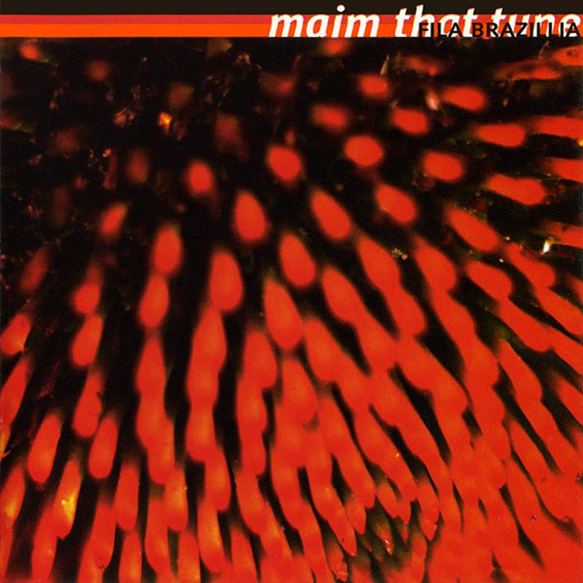

Fila Brazillia - Maim That Tune



Información del álbum facilitada por discogs.com:
Fecha de lanzamiento: 1995
Géneros: Electronic
Estilos: Downtempo, Ambient, Trip Hop
Pais: Finland
Votos: Media de 4.6 con 5 votos
Sello: Luumu Recordings
Tracklist:
Dave Yang & Steve Yin De-Swish T’ Swish 6:42
A Zed And Two L’s 9:26
Leggy 6:40
At Home In Space 10:28
6ft Wasp 9:25
Slacker 11:11
Harmonicas Are Shite 6:31
Extract Of Pineal Gland 7:14
Subtle Body 9:04